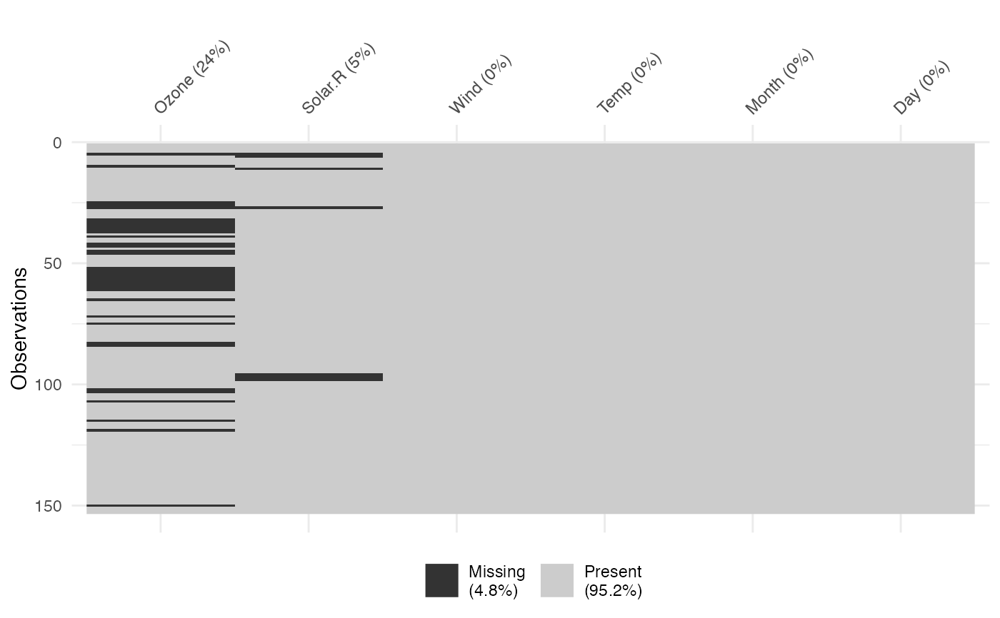

vis_miss provides an at-a-glance ggplot of the missingness inside a
dataframe, colouring cells according to missingness, where black indicates
a missing cell and grey indicates a present cell. As it returns a ggplot
object, it is very easy to customize and change labels.
vis_miss( x, cluster = FALSE, sort_miss = FALSE, show_perc = TRUE, show_perc_col = TRUE, large_data_size = 9e+05, warn_large_data = TRUE )
Arguments
| x | a data.frame |
|---|---|
| cluster | logical. TRUE specifies that you want to use hierarchical clustering (mcquitty method) to arrange rows according to missingness. FALSE specifies that you want to leave it as is. Default value is FALSE. |
| sort_miss | logical. TRUE arranges the columns in order of missingness. Default value is FALSE. |
| show_perc | logical. TRUE now adds in the \ in the whole dataset into the legend. Default value is TRUE. |
| show_perc_col | logical. TRUE adds in the \ column into the x axis. Can be disabled with FALSE. Default value is TRUE. |
| large_data_size | integer default is 900000 (given by `nrow(data.frame) * ncol(data.frame)``). This can be changed. See note for more details. |
| warn_large_data | logical - warn if there is large data? Default is TRUE see note for more details |
Value
ggplot2 object displaying the position of missing values in the
dataframe, and the percentage of values missing and present.
Note
Some datasets might be too large to plot, sometimes creating a blank plot - if this happens, I would recommend downsampling the data, either looking at the first 1,000 rows or by taking a random sample. This means that you won't get the same "look" at the data, but it is better than a blank plot! See example code for suggestions on doing this.
See also
Examples
vis_miss(airquality)vis_miss(airquality, cluster = TRUE)vis_miss(airquality, sort_miss = TRUE)